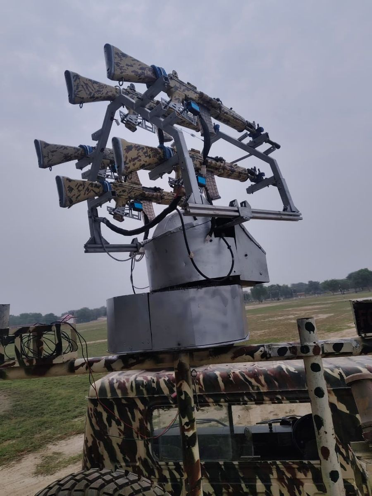
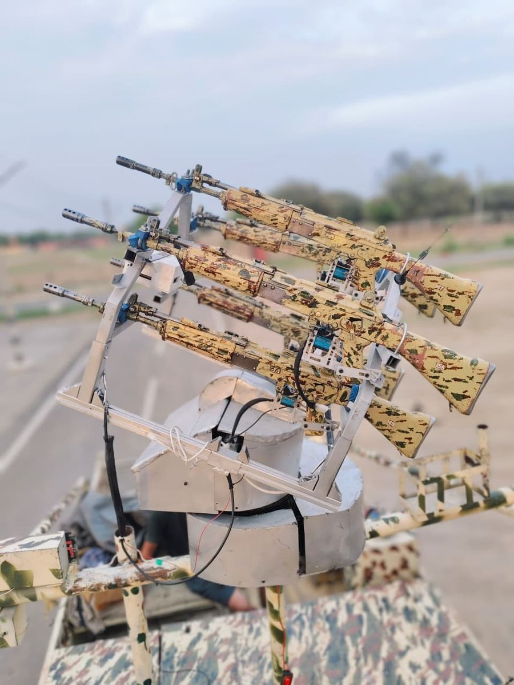
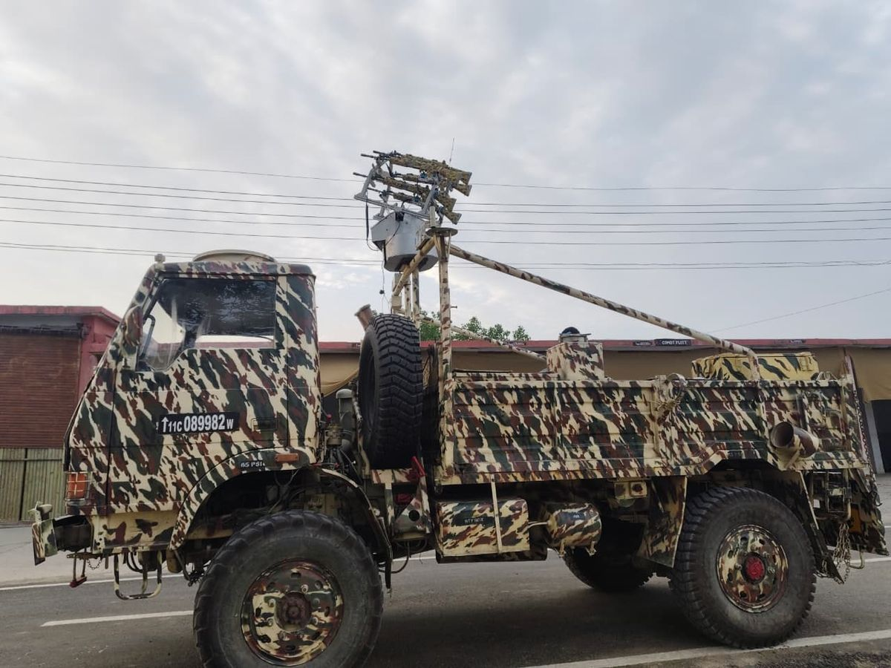
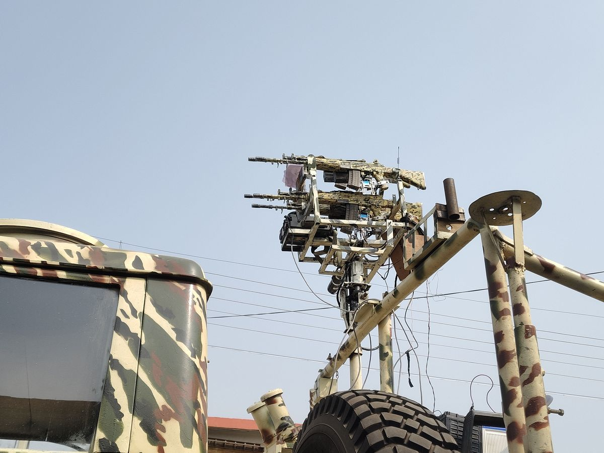
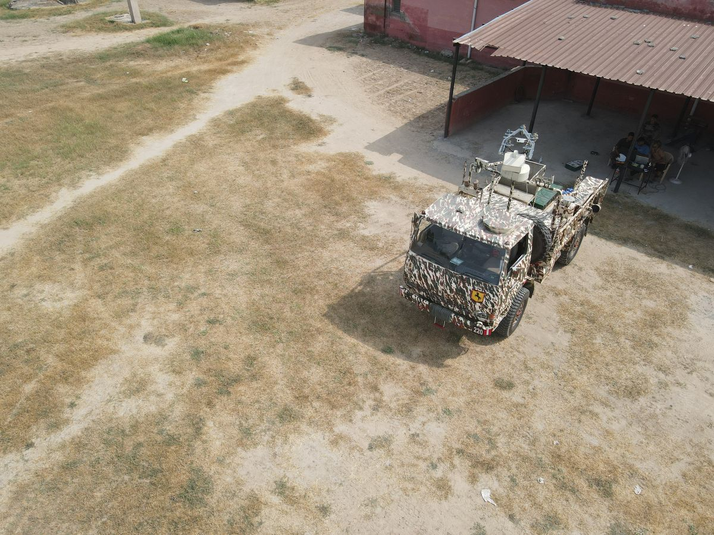

The platform
STRIKE
A modular counter-UAS platform family engineered to detect, track and respond to evolving aerial threats — designed to evolve with them.

STRIKE Gen 1 · turretGeneration 1
The foundation.
STRIKE Gen 1 establishes the baseline: a compact, rapidly deployable turret that sees, follows and cues — with an operator always in the loop.
AI-assisted detection & tracking
Computer vision finds and follows unauthorised drones in real time, with multiple aerial targets handled at once.
360° azimuth
A stepper-driven base gives continuous horizontal rotation with no blind arc.
Elevation control
Vertical travel up to 75° keeps targets in frame across altitude bands.
Five trigger units
Up to five independently actuated units, fired individually or together.
Dual operating modes
Automatic search-and-track for high-security sites; manual joystick control where judgement matters.
Day / night ready
An architecture designed to accept thermal and low-light sensing as it matures.

Deployed on a flatbed for field trials.
| Coverage | 360° continuous azimuth; elevation up to 75° |
|---|---|
| Effectors | Up to five independent trigger units, individual or simultaneous |
| Operating modes | Automatic tracking · manual joystick control |
| Deployment | Static tripod or mast, vehicle-mounted and trailer configurations |
| Mission packages | RF early warning · optical fibre · electronic warfare · solar power · multi-weapon |
| Documentation | Full specifications and integration details on request |
Generation 2 · concept architecture
Layered defence.
Gen 2 moves from a single response layer to two: a kinetic layer and an electronic-warfare layer, fed by richer sensing and edge compute.
Kinetic
Precision cueing and engagement through the turret.
Electronic warfare
Non-kinetic disruption where engagement is not the right answer.
Day / night PTZ
High-zoom optical tracking with thermal imaging, plus integrated LiDAR ranging.
Edge AI
On-platform inference for lower latency and reduced bandwidth dependence.
Gen 2 is presented as a development architecture. Capabilities are qualified progressively; detailed status is shared under NDA.

Gen 2 concept study — border emplacement with overhead drone.
Mobile

STRIKE-M on a general-service vehicle platform.
STRIKE-M
A mobile C-UAS vehicle that integrates radio-frequency detection, soft-kill jamming and hard-kill engagement on a single platform — operated through one command-and-control layer.
| Detection | RF-based drone detection with a mobile app interface |
|---|---|
| Soft kill | Directional jammer for disrupting control and navigation links |
| Hard kill | AI-enabled turret to detect, identify, track and engage |
| Control | Manual and autonomous engagement modes; integrated C2 |



Autonomous · concept
C-UAS rover.
A tracked unmanned platform that carries the same turret architecture into terrain and situations where a static emplacement or a crewed vehicle is the wrong answer.
GNSS / INS navigation
Route following and position hold without a dedicated driver.
EO/IR surveillance
Day and night observation from the same mast.
Remote or autonomous
Operated from a control station or tasked to a mission profile.
Modular payload
The C-UAS payload is swappable across the platform.
Shown as a design concept; not presented as a qualified capability.

Concept render — autonomous C-UAS tracked rover.
Discuss a configuration for your site.
Static, vehicle-mounted or trailer-based — we will map the platform to the mission.